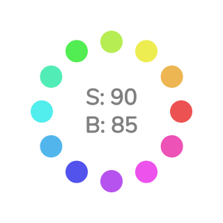

p5.js の色指定
RGB指定
数値で指定する場合、デフォルトでは 赤、緑、青 を指定する RGB モードとなっている
function setup() {
createCanvas(800, 600);
noStroke();
background(255); // 引数が1つだとグレースケール。0 が黒で 255 が白
background(0, 32); // 引数が2つだとグレースケール + α値（不透明度）
fill(0, 128, 255); // 引数が3つだとRGB指定。赤、緑、青 の順
circle(250, 300, 200);
fill(0, 128, 255, 64); // 引数が4つだと RGB + α値（不透明度）
circle(550, 300, 200);
}
※ どの値も範囲は 0～255 （colorMode() で変更可能）
カラーコード形式
文字列で指定する方法。Web上のカラーパレットツールなどを利用するときに便利
※ 値の先頭に # を付けることに注意
function setup() {
createCanvas(800, 600);
noStroke();
fill("#0080ff"); // 2桁ごとに 赤、緑、青（、α）の16進数（00～ff）
circle(400, 300, 200);
}
- カラーモード（RGB/HSB）の影響は受けない
- 一応、さらに2桁付け足すことでα値も指定できる
カラーパレットツール紹介
Color Hunt
4色のカラーパレットが大量に登録されている
Adobe Color
5色のうち1色について色相を変えると、他の色の色相も自動的にバランスを調整してくれる
paletton
Adobe Color と同じく、バランスを調整してくれる
HSB指定
色相・彩度・明度 を指定する（色相とは、赤、黄、緑、青、紫……などの色味の違いのこと）
色の数値を自分で調整する場合は、こちらのほうが RGB よりも直感的
function setup() {
createCanvas(800, 600);
// HSBモード。色相の範囲を 0～360、彩度・明度・α値 の範囲を 0～100 に設定
colorMode(HSB, 360, 100, 100, 100);
noStroke();
// 引数が1つだとグレースケール（明度を指定）。
// 上記の colorMode によって、明度の範囲は 0～100 になっている
background(100);
fill(30, 100, 100); // 色相、彩度、明度 の順
circle(250, 300, 200);
fill(30, 100, 100, 64); // 4つ目の引数はα値（不透明度）
circle(550, 300, 200);
}
色相について
色相の値の範囲が 0～360 とすると、
以下のような図（色相環と言う）の中で角度（0°～360°）を指定する、と考えれば良い
目安としては 0 で赤、30 で橙、60 で黄色…… という具合
